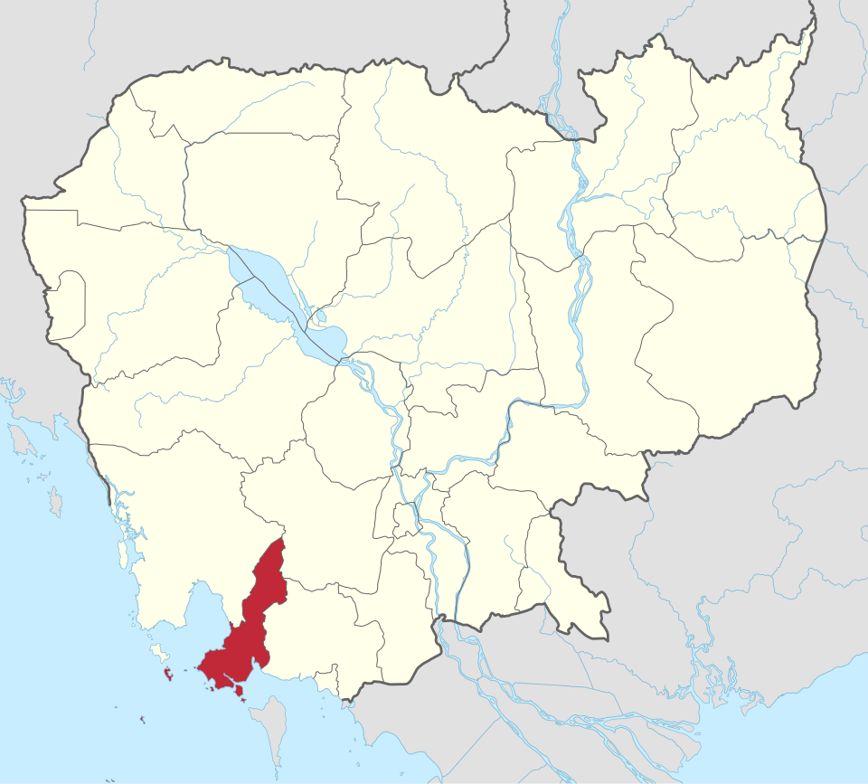
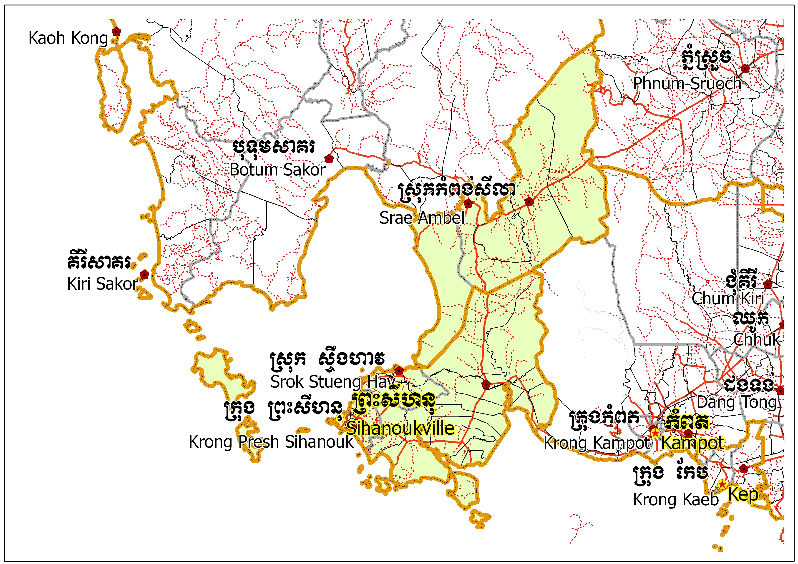
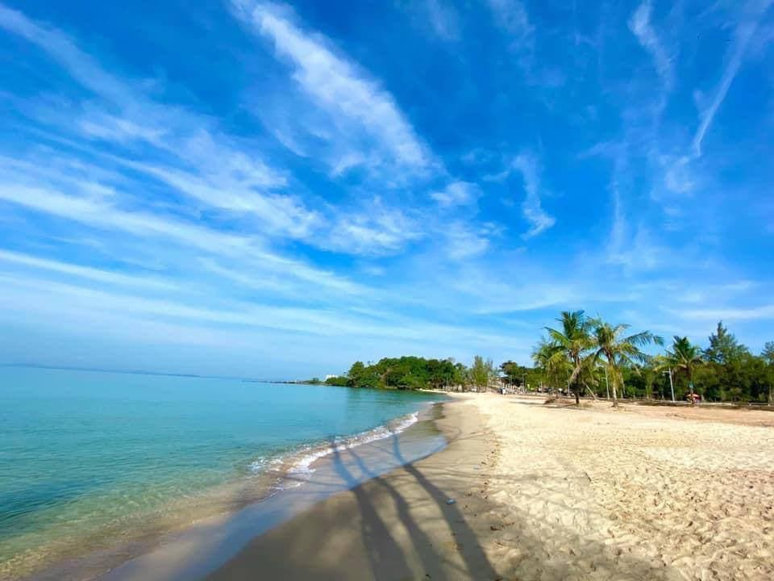
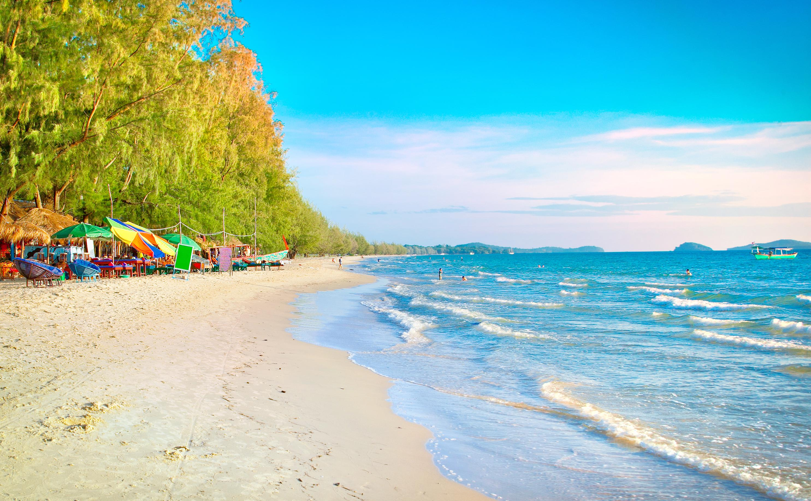
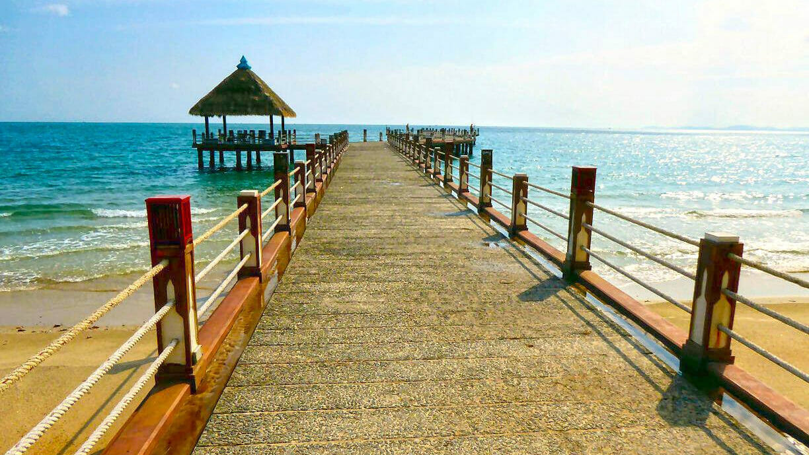

ខេត្តព្រះសីហនុ
ក្រុងព្រះសីហនុ ជាក្រុងធំបង្អស់នៅប៉ែកខាងត្បូងនៃប្រទេសកម្ពុជា ។ នេះជាក្រុងដែលត្រូវបានបង្កើតថ្មី នៅឆ្នាំ១៩៦៤ ។ ការបង្កើតក្រុងព្រះសីហនុ គឺដើម្បីរំឭកដល់ស្នាដៃរបស់ព្រះបាទនរោត្តមសីហនុ ។ ឈ្មោះដើមរបស់ក្រុងព្រះសីហនុ មុនឆ្នាំ១៩៦៤គឺកំពង់សោម ។ ក្រុងព្រះសីហនុ ជាទីក្រុងកំពងផែសមុទ្រធំបង្អស់នៅឆ្នេរសមុទ្ររបស់ប្រទេសកម្ពុជា ។ ក្រុងព្រះសីហនុស្ថិតនៅពាក់កណ្តាល ចន្លោះប្រទេសថៃ និងប្រទេសវៀតណាម ហើយក្រុងព្រះសីហនុជាទីក្រុងសំខាន់ជាងគេ នៅឈូងសមុទ្រថៃ ។ ក្រុងព្រះសីហនុជាកន្លែងដែលគួរឱ្យចាប់អារម្មណ៍ណាស់ សម្រាប់ទេសចរណ៍ជាតិនិងអន្តរជាតិ ។ យោងតាមឯកសារក្រសួងទេសចរណ៍នៃប្រទេសកម្ពុជា បានឱ្យដឹងថា ក្នុងឆ្នាំ២០០៦ មានចំនួនទេសចរណ៍អន្តរជាតិ ប្រមាណជាង ៣២០,០០០ នាក់ មកទស្សនាក្រុងព្រះសីហនុ ។ នៅខែមករា ឆ្នាំ២០០៧ ព្រលានយន្តហោះនៅក្រុងព្រះសីហនុ ត្រូវបានបើកសម្ពោធដើម្បីការហោះហើរជាសំខាន់ ក្រុងសៀមរាប-ក្រុងព្រះសីហនុ ហើយតាមគម្រោងនៃរាជរដ្ឋាភិបាល បានឱ្យដឹងថាព្រលានយន្តហោះនៃក្រុងព្រះសីហនុនឹងក្លាយជាព្រលានយន្តហោះអន្តរជាតិនៅឆ្នាំ២០១០ ។

អាកាសធាតុ
ទីក្រុងព្រះសីហនុមានរដូវរងា ចាប់ពី វិច្ឆិកាដល់ខែកុម្ភះ និង មានរដូវលំមានប្រាំង ចាប់ ខែមិនា ដល់ខែឧសភា រដូវភ្លៀង មានចាប់ពី ខែមិថុនា ដល់ខែតុលា៕ ទីក្រុងព្រះសីហនុ គឺជាក្រុងដែលមានភ្លៀងធ្លាក់ច្រើនជាងគេ នៅប្រទេសកម្ពុជាយើង ពីព្រោះមាន ភ្នំបូគោ នៅខាងជើង។ នៅថ្ងៃដែលក្តៅជាងនៅទីក្រុងព្រះសីហនុ មានកំដៅរហូតទៅដល់ ៣៥អង្សា ហើយបើត្រជាក់ជាងគេវិញមានរហូត ២០អង្សា ៕

.jpg)
រដ្ឋបាល
ខេត្តព្រះសីហនុ ជាដែនរដ្ឋបាលស្ថិតនៅ ប្រទេសកម្ពុជា មាន ក្រុង៣, ស្រុក៣, ២៩ឃុំ, និង ១១១ភូមិ÷
- ក្រុងព្រះសីហនុ
- ស្រុកព្រៃនប់
- ស្រុកស្ទឹងហាវ
- ស្រុកកំពង់សីលា
- ក្រុងកោះរ៉ុង
- ក្រុងកំពង់សោម
ឆ្នេរសមុទ្រក្រុងព្រះសីហនុ
ឆ្នេរអូរឈើទាលឆ្នេរនេះមានភាពទាក់ទាយនិងល្បីល្បាយជាខ្លាំងនៅក្នុងព្រះរាជាណាចក្រកម្ពុជាយើង ។ក្នុងមួយឆ្នាំៗឆ្នេនេះអាចទាក់ទាយភ្ញៀវទេសចរណ៏បានរាប់រយពាន់នាក់ចូលមកទស្សនានៅក្នុងក្រុងព្រះសីហនុដែលជាចំនែកមួយក្នុងការជួយអភិវឌ្ឍន៍ដល់កំនើនសេដ្ឋកិច្ចជាតិ ។អូរឈើទាលជាតំបន់ឆ្នេរមួយដែលមានទេសភាពធម្មជាតិស្រស់ល្អបំព្រងគួរអោយចាប់អារម្មណ៏ក្រៃលែង ។ អូរឈើទាលមានឆ្នេរខ្សាច់សស្អាត វែងអន្លាយនឹងមានដើមឈើជាច្រើនដុះអែបមាត់ ឆ្នេរសមុទ្រមើលទៅជាជួរគួរអោយ ទាក់ទាយបំផុតហេតុនេះហើយឆ្នេរនេះក៏បានជាប់ជាសមាជិកក្លឹបឆ្នេរដែលស្អាតជាងគេក្នុងពិភពលោក ។ នៅទីនោះមានតូបខ្ចុះរបស់អាជីវកររកស៊ីលក់ដូរយ៉ាងច្រើនសំសរាប់ ភ្ញៀវទេសចរណ៏ជួលអង្គុយលេង ឬសំរាកកាយនៅពេលដែលពួកគេបានមកដល់ទីកន្លែងនេះ ។ ភ្ញៀវទេសចរណ៏ជាតិនិងអន្តរជាតិដែលបានធ្វើដំណើរកំសាន្តនៅឆ្នេរអូរឈើទាល អាចលេងទឹកសមុទ្រយ៉ាងសប្បាយរីករាយនិងយ៉ាងត្រជាក់ចិត្ត ឬពួកគេអាចជួលទូកដើម្បីធ្វើដំណើរកំសាន្តឆ្ពោះទៅកាន់កោះនានា ដែលភាគច្រើនគឺជាជនជាតិបរទេស ។ ភ្ញៀវទេសចរណ៏មួយចំនួនចូលចិត្តលេងទឹក ជួលពោង ឬ ជួលអូរបរជិះកំសាន្តលេងយ៉ាងសប្បាយរីករាយ ។ ភ្ញៀវទេសចរណ៏អាចកុម្ម៉ង់ម្ហូបអាហារ ជាប្រភេទអាហារសមុទ្រ ដូចជា មឹក បង្គា ក្ដាម ត្រីសមុទ្រជាដើមដែលសុទ្ធសឹងតែជាអាហារមានឪជារសឈ្ងុយឆ្ងាញ់ ពិសារ ។ ក្រៅពីនេះភ្ញៀវទេសចរណ៏អាចទិញវត្ថុអនុស្សាវរីយ៏ ដែលធ្វើអំពីសំបកខ្យង ផ្កាថ្ម ខ្សែដៃ ខ្សែក .......ទាំងអស់នេះគឺជាសា្នដៃប្រជាពលរដ្ឋខ្មែរ នឹងមានអ្នកម៉ាសសា ផងដែរ ។ ឆ្នេរអូរឈើទាលជាឆ្នេរដែលសំបូរភ្ញៀវទេសចរណ៏ជាតិ និងអន្តជាតិ មកកំសាន្តសើ្ទរតែរៀងរាល់ថ្ងៃ គ្មានថ្ងៃលោះឡើយជាពិសេសថ្ងៃឈប់សំរាក បុណ្យទាន ឬក៏ថ្ងៃសំរាកចុងសប្ដាហ៏ ។


ឆេ្នរឯករាជ្យ ក៏ជាឆ្នេរមួយដែលមានភាពស្រស់ស្អាត ហើយក៏មានភ្ញៀវទេសចរណ៏ទៅលេងកំសាន្ត នៅទីនោះច្រើនកុះករដែរ ។ ឆ្នេរឯករាជ្យខាងលិចជាប់ ឆ្នេរហាវ៉ៃ ខាងកើតជាប់នឹងឆ្នេរសុខា ឆ្នេរឯករាជ្យមានអគារដ៏ខ្ពស់សាងសង់ឡើងជាយូរមកហើយ ហើយអគារនេះមានប្រាំពីរជាន់ ។ប្រជាជនខ្មែរយើងភាគច្រើននិយមហៅឆ្នេរឯករាជ្យថាឆ្នេរអូរតែលប្រាំពីរជាន់ព្រោះថាអគារខ្ពស់ នោះគឺជាសណ្ឋាគារដ៏ធំមួយ ស្ថិតនៅលើដីភ្នំខ្ពស់ ។ ពីមុនអគារនេះរងការ ខូចខាតនិង ទ្រុឌទ្រោមយ៉ាងខ្លាំង ក៏ប៉ុន្តែឥឡូវនេះគេបានធ្វើការជួសជុលស្ថាបនាសាឡើងវិញ ធ្វើអោយអូរតែលប្រាំពីរជាន់មាន ភាពស្រស់ស្អាត ជាងមុនឆ្ងាយណាស់ រួមជាមួយនឹងឆ្នេរខ្សាច់សក្បុសតាមដងផ្លូវមានដើមក្ងោកពណ៌ក្រហមឆ្អៅ នឹង អមជាមួយនឹងសួនច្បារដ៏ស្អាតផងដែរ ។

អូរត្រេះ គឺជាឆ្នេរសមុទ្រមួយដែលស្ថិតនៅក្នុងខេត្តព្រះសីហនុដែរវាមានសោភ័ណ្ឌភាពស្រស់ស្អាតមិនចាញ់ឆ្នេរអូរឈើទាល ឆ្នេរសុខា ឆ្នេរហាវៃ ឡើយ.....។ វាជាឆ្នេរមួយដែលភាពស្ងប់ស្ងាត់នៅក្នុងក្រុង ព្រោះវាស្ថិនៅដាច់ឆ្ងាយបន្តិច ប៉ុន្តែបច្ចុប្បន្នក៏មិនសូវស្ងាត់ ដូចពីមុនទេ ពីព្រោះដោយសារនៅទីនោះមានទេសភាពស្រស់ស្អាតមើលទៅគួរអោយអោយចង់គយគន់ក្រៃលែងហើយមានភ្ញៀវទេសចរណ៏មួយចំនួនចូលចិត្តកន្លែងស្ងប់ស្ងាត់ ក៏និយមទៅកំសាន្តនៅឆ្នេរអូរត្រេះដែរ ជាហេតុធ្វើអោយឆ្នេរ អូរត្រេះមានសភាពអូរអរជាងមុន មានភ្ញៀវទេសចរណ៏អន្តរជាតិ ទៅកំសាន្តយ៉ាងកុះករ ។ ក៏ប៉ុន្តែនៅទីនោះពុំទាន់មានភ្លើងអគ្គីនីគ្រប់គ្រាន់ នៅឡើយទេ គឺវាមានតែកន្លែងមួយចំនួន ប៉ុណ្ណោះដែលមានម៉ាស៊ីនភ្លើងប្រើប្រាស់ សំរាប់ភាពចាំបាច់របស់ពួកគេ ។ ជាមួយគ្នានេះផងដែរ នៅឆ្នេរអូរត្រេះក៏មានការជិះក្ដារបន្ទះ នៅលើទឹកហើយនិងជួលទូកកាយ៉ាក់ចែវលេង រួមទាំងមានកីឡាជិះក្ដារមានក្ដោងយ៉ាងសប្បាយរីករាយផងដែរ ។ ភាគច្រើនគឺជាភ្ញៀវបរទេសទៅកំសាន្តនៅឆ្នេរអូរត្រេះហើយភ្ញៀវទេសចរណ៏អាចធ្វើការលំហែកាយ ដោយអ្នកខ្លះជួលអូរបរ ឬពោងសំរាប់លេងទឹក ។ ភ្ញៀវទេសចរណ៏អាចធ្វើដំណើរទៅកាន់ កោះនានាផងដែរ ។